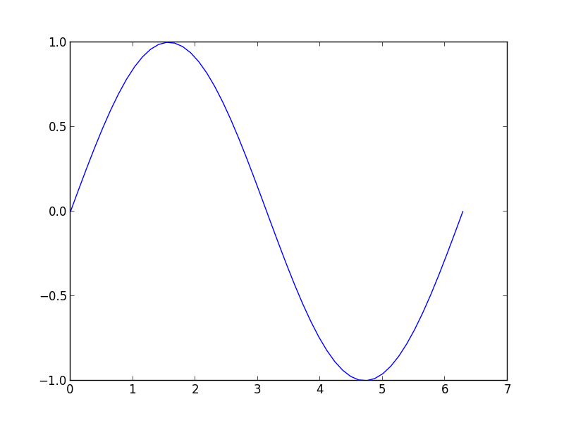
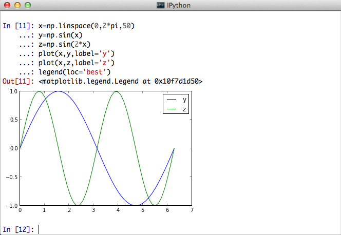

Mountail Lion 上的 Python 科研环境的搭建
作为一个科研民工，Python 是我的重要生产工具。我常用的 Python 相关的库有：numpy、scipy、matplotlib、ipython 等。刚开始使用 Max OSX Lion 时，我直接用 macport 安装了这些工具，还算顺利。不过，macport 的包不算新，尤其是无法用上 ipython qtconsole。因此在升级到 mountain lion 后，决定重新搭建一个 python 的生产环境。
主要参考了 http://www.thisisthegreenroom.com/2011/installing-python-numpy-scipy-matplotlib-and-ipython-on-lion/.
Table of Contents
准备工作
要全新安装 Python，要暂时将 macport 隔离，一方面要将环境变量中的 PATH 中的 macport 路径去除（~/.profile or ~/.bashrc），另外可暂时将 /opt/local 改名。
将 xcode 升级到最新版。
用 homebrew 安装所需的工具，gfortran 等。
如果没有配置 Homebrew，用下面的命令进行配置：
ruby <(curl -fsSkL raw.github.com/mxcl/homebrew/go)
Homebrew 安装的软件都在 usr/local 下需要把该路径加到 PATH 变量中 (~/.profile or ~/.bashrc)，同时加入 /usr/local/share/python （用 Homebrew 安装的 Python 路径）：
export PATH=/usr/local/share/python:/usr/local/bin:$PATH
修改 PATH 后最好重新打开终端（shell）以更新路径。
注意: Homebrew 的安装目录默认是用户可写的，因此不需要 sudo 。
安装 numpy、scipy 等需要 gfortran、swig、umfpack：
brew install gfortran brew install swig brew install umfpack
用 Homebrew 安装 Python
mountain lion 自带的 Python 是 2.72，下面用 Homebrew 安装一个新的 Python 2.7.3
brew install python --framework --universal
然后修改系统的 Python 版本：
cd /System/Library/Frameworks/Python.framework/Versions sudo rm Current sudo ln -s /usr/local/Cellar/python/2.7.3/Frameworks/Python.framework/Versions/Current
此后的 Python 包都尽量用 pip 进行安装和管理。安装好的 Python 自带了一个 pip，其版本是 1.2，如果想用更新一点的，用 easy_install 新安装一个 1.21 版(pip 无法安装自己)：
easy_install pip
Numpy 和 scipy
先用 pip 安装 numpy：
pip install numpy
查看 numpy 的版本和路径：
import numpy print numpy.__version__ print numpy.__file__
1.6.2 /usr/local/Cellar/python/2.7.3/Frameworks/Python.framework/Versions/2.7/lib/python2.7/site-packages/numpy/__init__.pyc
scipy 的安装相对要麻烦一些。mountain lion 下直接 pip install scipy 有问题，相关的问题在 scipy 的git 版本中已经得到修正，因此要用下面的命令安装 github 上的 dev 版本：
pip install -e git+https://github.com/scipy/scipy#egg=scipy-dev
这时可能会出现下面的错误：
numpy.distutils.npy_pkg_config.PkgNotFound: Could not find file(s) ['/usr/local/Cellar/python/2.7.3/Frameworks/Python.framework/Versions/2.7/lib/python2.7/site-packages/numpy/core/lib/npy-pkg-config/npymath.ini']
我的解决方法是，重新下载一个 numpy 的源码（版本和前面安装的相同），解开后进行 build：
python setup.py build
在 build 目录下面的src.macosx-10.8-intel-2.7/numpy/core/lib/npy-pkg-config/ 下能找到这个文件 npymath.ini，把这个 npy-pkg-config 目录都 copy 到 usr/local/Cellar/python/2.7.3/Frameworks/Python.framework/Versions/2.7/lib/python2.7/site-packages/numpy/core/lib 下面，继续前面的安装，就能够克服这个问题。但在编译的最后，发现无法找到 libnpymath 库，这个库可以在 build 目录下的 temp.macosx-10.8-intel-2.7 里找到 libnpymath.a ，同样把它 copy 到 上面的 core/lib 目录下，继续 pip 就成功了。
检查 scipy 的版本：
import scipy print scipy.__version__ print scipy.__file__
0.12.0.dev-5c40ff8 /Users/xxh/src/scipy/scipy/__init__.pyc
可见编译的 dev 版本没有把文件都复制到 usr/local… 下，而是保留在原地，在 /usr/local/Cellar/python/2.7.3/Frameworks/Python.framework/Versions/2.7/lib/python2.7/site-packages 下放了个 scipy.egg-link 。
matplotlib
那个参考的文档同样建议 mountain lion 用户安装 git版本：
pip install git+https://github.com/matplotlib/matplotlib.git#egg=matplotlib-dev
安装顺利，检查版本：
import matplotlib print matplotlib.__version__ print matplotlib.__file__
1.3.x /usr/local/Cellar/python/2.7.3/Frameworks/Python.framework/Versions/2.7/lib/python2.7/site-packages/matplotlib/__init__.pyc
画个简单的曲线测试一下：
import numpy as np
import matplotlib.pyplot as plt
x=np.linspace(0, 2*np.pi, 50)
y = np.sin(x)
plt.plot(x,y)
plt.savefig('img/matplotlib_test_sinx.png')

ipython
pip install ipython
这就可以用 ipython 了。但要想使用惊艳的 inline image 功能的 ipython，首先要从安装 QT lib 开始。
从 http://qt.nokia.com/downloads/qt-for-open-source-cpp-development-on-mac-os-x 下载 Qt lib for mac, 安装。
然后用 Homebrew 安装 pyqt 和 zmq：
brew install pyqt brew install zmq
再用 pip 安装 pyzmq 和 pygments
pip install pyzmq pip install pygments
现在就可以用 ipython qtconsole 了：
ipython qtconsole --pylab=inline
ipython qtconsole 支持多行编辑和页内显示图片：

FiPy
FiPy 是用 Python 开发的一个偏微分方程求解器，采用的是有限容积法。直接用 pip 安装即可。不过要首先安装 pysparse。pysparse 是一个稀疏矩阵求解器，是 FiPy 默认采用的求解器。不过我用 pip 安装 pysparse 时出现错误，幸好还有一个 csc-pysparse（是 mit 的一个分支，目的就是使得 pip 能够安装）：
pip install csc-pysparse pip install fipy
import pysparse print pysparse.__version__ import fipy print fipy.__version__